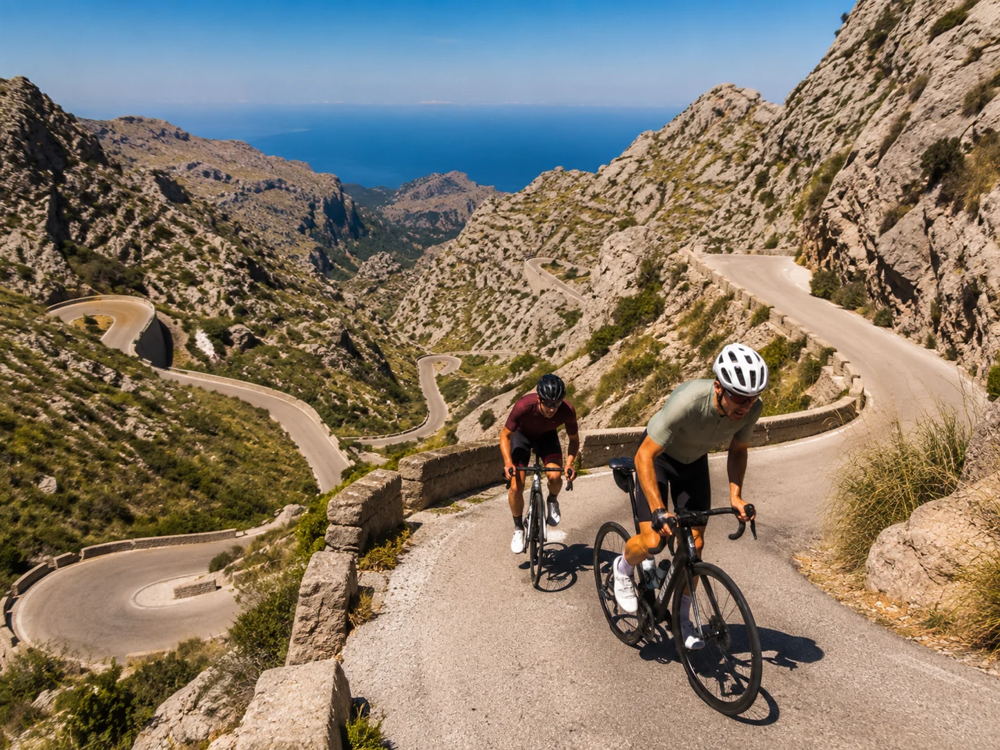
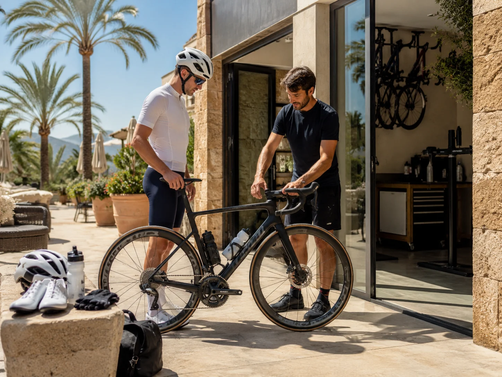
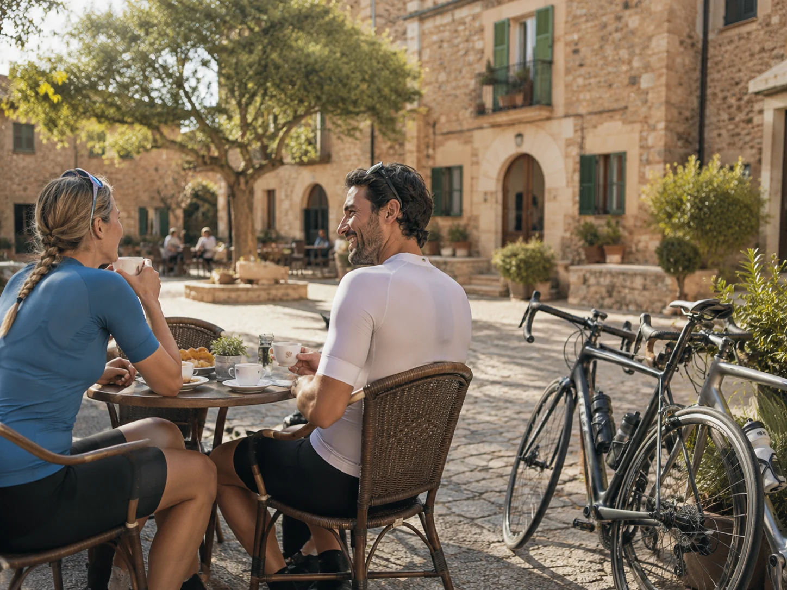

Malorka nie je iba ostrovom pláží a dovolenkových rezortov. Pre cyklistov patrí medzi najzaujímavejšie destinácie v Európe. Na relatívne malej ploche ponúka pokojné cesty medzi dedinami, nenáročné pobrežné úseky, bývalú železničnú trať pre rekreačných cyklistov aj horské stúpania v pohorí Serra de Tramuntana.
Výhodou je dobrá cestná infraštruktúra, hustá sieť požičovní, hotely prispôsobené cyklistom a možnosť vybrať si trasu prakticky pre každú úroveň kondície. Oficiálne zdroje Malorky uvádzajú viac ako 120 ubytovacích zariadení zameraných na cyklistov a sieť 16 odporúčaných cestných trás s celkovou dĺžkou približne 1 732 kilometrov.
Tento sprievodca vznikol na základe AI cestovateľského prieskumu. Nejde o opis osobnej skúsenosti z cyklistickej dovolenky na Malorke.
Pre koho je cyklistická Malorka vhodná?
Na ostrove si dokáže nájsť vhodný program takmer každý:
- rekreačný cyklista, ktorý chce denne prejsť 30 až 60 kilometrov,
- cestný cyklista hľadajúci kvalitný jarný tréning,
- milovník horských stúpaní a technických zjazdov,
- pár alebo skupina s rozdielnou kondíciou,
- seniori a menej trénovaní cyklisti využívajúci elektrobicykel,
- rodiny, ktoré zostanú pri pobrežných trasách alebo na zelenej ceste Vía Verde,
- gravel cyklisti, ktorí chcú kombinovať asfalt s nespevnenými úsekmi.
Malorka však nie je iba „ľahký ostrov“. Najznámejšie horské trasy vedú po úzkych cestách, obsahujú dlhé stúpania a vyžadujú istotu pri zjazde. Trasu treba vyberať podľa najslabšieho člena skupiny, nie podľa najvýkonnejšieho.
Kedy je najlepšie obdobie na cyklistiku?
Najlepšia voľba: marec až máj a koniec septembra až október
Za najvhodnejšie obdobie považujem:
marec až máj, keď sú teploty príjemné, krajina zelenšia a letné horúčavy ešte nezačali,
a
druhú polovicu septembra až október, keď teploty postupne klesajú a na cestách je menej dovolenkovej premávky.
Ide o odporúčanie vychádzajúce z dlhodobých klimatických údajov, nie o záruku počasia počas konkrétneho pobytu.
| Obdobie | Podmienky | Pre koho je vhodné |
|---|---|---|
| Január – február | Chladné rána, vietor a premenlivejšie počasie | Skúsení cyklisti a tréningové skupiny |
| Marec – apríl | Príjemné denné teploty, chladnejšie horské zjazdy | Jedno z najlepších období |
| Máj | Teplejšie a stabilnejšie počasie | Výborná kombinácia cyklistiky a mora |
| Jún | Už pomerne horúco, potrebné skoré štarty | Skôr ranné jazdy |
| Júl – august | Veľké horúčavy a silná dovolenková premávka | Iba kratšie trasy skoro ráno |
| September | Teplé more, postupne lepšie podmienky | Najmä druhá polovica mesiaca |
| Október | Príjemné teploty, ale vyššie riziko dažďa | Veľmi dobrá jesenná cyklistika |
| November – december | Kratšie dni a neistejšie počasie | Pokojná dovolenka bez istoty podmienok |
Podľa klimatických normálov meteorologickej služby AEMET dosahujú priemerné denné maximá pri letisku Palma približne 17,5 °C v marci, 19,8 °C v apríli, 23,7 °C v máji a viac ako 31 °C v júli a auguste. Október má priemerné maximum okolo 23,9 °C, ale patrí medzi daždivejšie mesiace. V horskej Tramuntane môže byť citeľne chladnejšie a veternejšie než pri pobreží.
Prečo by som neodporúčal hlavný letný termín
V júli a auguste sa dá bicyklovať, ale rozumný štart môže znamenať vyraziť už okolo šiestej alebo siedmej ráno. Na dlhých stúpaniach je málo tieňa, asfalt sa prehrieva a turistické oblasti zapĺňajú autá.
Letný pobyt môže fungovať ako klasická dovolenka pri mori doplnená niekoľkými kratšími rannými jazdami. Na čisto cyklistickú dovolenku je jar alebo jeseň príjemnejšia.
Kde sa na Malorke ubytovať?
Výber základne rozhoduje o tom, koľko energie miniete na presuny a koľko na samotnú cyklistiku.
Port de Pollença alebo Alcúdia: najuniverzálnejšia základňa
Sever ostrova je vhodný pre prvú cyklistickú návštevu. V dosahu sú:
- polostrov Formentor,
- stúpanie Coll de sa Batalla,
- kláštor Lluc,
- prístup smerom k Sa Calobre,
- pokojnejšie roviny vo vnútrozemí,
- množstvo požičovní a cyklistických hotelov.
Táto oblasť vyhovuje skupinám, v ktorých nie všetci chcú jazdiť rovnako náročné trasy.
Can Pastilla alebo Playa de Palma: praktické na krátky pobyt
Výhodou je blízkosť letiska, veľký výber ubytovania a nenáročná pobrežná cyklotrasa smerujúca do Palmy. Základňa je vhodná pre rekreačných cyklistov a krátke pobyty bez auta.
Za veľkými horskými trasami však treba absolvovať dlhší presun alebo začať jazdu ďaleko od hlavných stúpaní.
Sóller alebo Port de Sóller: priamo medzi horami
Výborná základňa pre skúsených cyklistov, ktorí chcú jazdiť predovšetkým v pohorí Serra de Tramuntana. Treba však počítať s tým, že takmer každý výjazd bude obsahovať stúpanie a záver často aj náročný návrat.
Pre úplného začiatočníka nemusí byť Sóller najpraktickejšou voľbou.
Petra, Sineu a stred ostrova: pokojné cesty a dediny
Vnútrozemie ponúka zvlnené cesty medzi vinicami, poľami a tradičnými mestečkami. Je vhodné pre cykloturistov, ktorí nehľadajú iba slávne horské priesmyky a chcú spoznať pokojnejšiu Malorku.
Nevýhodou je väčšia vzdialenosť od mora.
Peguera, Calvià alebo Andratx: juhozápad Tramuntany
Dobrá voľba pre pobrežnú cestu smerom na Estellencs, Banyalbufar, Valldemossu a ďalšie miesta západnej časti ostrova.
Čo by mal ponúkať cyklistický hotel?
Pri rezervácii nestačí označenie „bike friendly“. Overte si konkrétne služby:
- uzamykateľnú miestnosť na bicykle,
- kamerový systém alebo kontrolovaný vstup,
- stojany, základné náradie a pumpu,
- miesto na umytie bicykla,
- možnosť vyprať cyklistické oblečenie,
- skoré raňajky,
- priestor na uloženie prepravného kufra,
- pravidlá týkajúce sa bicykla na izbe,
- spoluprácu s požičovňou alebo servisom.
Mnohé špecializované hotely na Malorke ponúkajú servisné stojany, dielňu, úschovňu a jedálniček prispôsobený športovcom, ale rozsah služieb sa medzi hotelmi výrazne líši.
Najzaujímavejšie cyklistické trasy
Uvedené vzdialenosti sú orientačné. Výsledné číslo závisí od miesta štartu, zvolenej odbočky a návratu do ubytovania.
| Trasa alebo stúpanie | Orientačné parametre | Náročnosť |
|---|---|---|
| Pobrežie Palmy | približne 17 km, takmer rovina | Ľahká |
| Vía Verde Manacor – Artà | približne 29 km, prevažne nespevnená bývalá železnica | Ľahká až stredná |
| Okruh cez Orient | približne 34 km podľa variantu | Stredná |
| Cap de Formentor | približne 38 – 42 km a okolo 1 200 výškových metrov | Stredná až náročná |
| Coll de Sóller | stúpanie 7,5 km a približne 450 výškových metrov | Stredná |
| Coll de sa Batalla | stúpanie 8,1 km a približne 450 výškových metrov | Stredná |
| Sant Salvador | stúpanie 4,8 km a približne 380 výškových metrov | Stredná |
| Puig Major | stúpanie približne 14 km a 840 výškových metrov | Náročná |
| Sa Calobra | záverečné stúpanie 9,5 km, 682 metrov, priemer približne 7 % | Veľmi náročná |
| Veľký deň v Tramuntane | približne 115 km a okolo 2 500 výškových metrov | Iba pre trénovaných |
Parametre hlavných stúpaní vychádzajú z cyklistických databáz a miestnych sprievodcov. Pri plánovaní sa riaďte celou trasou, nie iba dĺžkou jedného kopca.
Cap de Formentor: symbol cyklistickej Malorky
Trasa z Port de Pollença k majáku Cap de Formentor patrí k najfotogenickejším výjazdom na ostrove. Vedie cez vyhliadku Es Colomer, zvlnený terén, otvorené skalnaté úseky a záverečné kilometre k majáku.
Hoci vzdialenosť nevyzerá extrémne, jazdu sťažuje súčet stúpaní, vietor, slnko a úzke úseky. Počas hlavnej sezóny treba počítať aj s autobusmi.
V roku 2026 platí na ceste Ma-2210 obmedzenie motorovej dopravy od 15. mája do 18. októbra, denne od 10:00 do 22:00. Prístup zostáva povolený verejnej doprave, chodcom a cyklistom. Pre cyklistov to znamená menej súkromných áut, nie však úplne prázdnu cestu.
Sa Calobra: legenda, ktorú netreba podceniť
Slávne serpentíny Sa Calobry vrátane zákruty Nus de sa Corbata vyzerajú na fotografiách ako cyklistický sen. Samotné stúpanie od pobrežia má približne 9,5 kilometra, 682 výškových metrov a priemerný sklon okolo 7 percent.
Problémom nie je iba toto stúpanie. K jeho začiatku sa musíte najskôr dostať cez horský terén a potom sa rovnakým smerom vrátiť. Celodenný výjazd preto môže mať podľa základne 80 až viac ako 130 kilometrov a výrazne vyše 2 000 výškových metrov.
Sa Calobra nie je vhodná ako prvá jazda po prílete. Najskôr si otestujte bicykel, brzdy, radenie, hydratáciu a vlastnú kondíciu na kratšom výjazde.
Coll de Sóller: krásne serpentíny bez extrémnych sklonov
Historická cesta cez Coll de Sóller má množstvo pravidelných zákrut a pomerne rovnomerné stúpanie. Je vhodná pre cyklistov, ktorí chcú prvý väčší horský výjazd, ale ešte si netrúfajú na Sa Calobru.
Puig Major: dlhé stúpanie pre vytrvalcov
Puig Major je najvyššou horou Malorky, hoci cesta nevedie až na samotný vrchol. Stúpanie je dlhé približne 14 kilometrov s prevýšením okolo 840 metrov. Nie je založené na extrémnych krátkych sklonoch, ale na dlhom súvislom výkone.
Vía Verde Manacor – Artà: Malorka aj bez cestných áut
Trasa po telese bývalej železnice je zaujímavá pre rekreačných cyklistov, rodiny a gravel bicykle. Povrch nie je všade vhodný pre úzke cestné plášte, preto je lepší trekkingový, gravelový alebo horský bicykel.
Je to dobrá alternatíva na oddychový deň medzi horskými etapami.

Cestný bicykel, gravel alebo elektrobicykel?
Cestný bicykel
Najlepšia voľba pre väčšinu známych malorských trás. Ostrov má kvalitné asfaltové cesty a dlhé horské stúpania, na ktorých oceníte ľahší bicykel.
Pre bežného cykloturistu je praktická kompaktná kľuka 50/34 a kazeta minimálne 11–30, lepšie 11–32 alebo 11–34.
Gravel
Vhodný pre cyklistov, ktorí chcú kombinovať asfalt, poľné cesty a trasu Vía Verde. Niektoré nespevnené úseky však môžu viesť cez súkromné pozemky alebo chránené oblasti, preto treba používať legálne a verejne prístupné trasy.
Elektrobicykel
Elektrobicykel dokáže vyrovnať rozdiely vo výkonnosti skupiny a sprístupniť horské trasy rekreačným cyklistom. Stále však treba vedieť bezpečne brzdiť a zvládnuť zjazd. Vyššia hmotnosť e-bicykla môže byť v zákrutách cítiť.
Preprava vlastného e-bicykla lietadlom je komplikovaná pre veľkú lítiovú batériu. Ryanair ani Austrian Airlines bežné elektrobicykle s batériou neprijímajú ako štandardné športové vybavenie. Pre väčšinu cestujúcich je preto jednoduchšie požičať si e-bike priamo na Malorke.

Vlastný bicykel alebo požičovňa?
Toto je jedno z najdôležitejších rozhodnutí celej cesty.
Kedy sa oplatí vziať vlastný bicykel
Vlastný bicykel dáva väčší zmysel, keď:
- plánujete jazdiť aspoň päť až sedem dní,
- máte presne nastavený posed,
- používate špecifické sedlo, pedále alebo komponenty,
- čaká vás náročný tréningový pobyt,
- vlastníte kvalitný prepravný kufor,
- viete bicykel bezpečne rozobrať a opäť nastaviť.
Výhodou je známe ovládanie, správna veľkosť a pohodlie. Nevýhodou sú poplatky aerolinky, veľký kufor, komplikovanejší transfer a riziko poškodenia.
Kedy je lepšie bicykel požičať
Požičovňa je praktickejšia, keď:
- idete iba na tri až päť cyklistických dní,
- cestujete len s príručnou batožinou,
- nechcete riešiť veľký transfer z letiska,
- chcete si požičať elektrobicykel,
- kombinujete cyklistiku s klasickou dovolenkou,
- nemáte kvalitný obal na bicykel,
- chcete po prílete iba prevziať pripravený bicykel.
Na ostrove pôsobí veľké množstvo požičovní, najmä v okolí Palmy, Alcúdie, Port de Pollença, Can Picafortu a ďalších cyklistických centier.
Koľko stojí požičanie bicykla?
Ceny závisia od sezóny, materiálu rámu, elektronického radenia, typu bŕzd a dĺžky prenájmu.
Orientačne treba počítať s týmito úrovňami:
- základný cestný bicykel približne 35 až 60 eur na deň,
- kvalitnejší karbónový bicykel približne 60 až 100 eur na deň,
- prémiový model približne 100 až 150 eur na deň,
- týždenný prenájom bežného karbónového cestného bicykla približne od 250 do 400 eur.
Jedna z veľkých miestnych požičovní uvádza napríklad pri vybranom karbónovom modeli cenu 60 eur na deň alebo 260 eur za týždeň. Prémiové modely dosahujú približne 350 až 590 eur za týždeň. Ceny sa môžu meniť podľa termínu a dostupnosti.
Čo si overiť ešte pred rezerváciou
Požičovni pošlite:
- svoju výšku,
- dĺžku vnútornej strany nohy,
- veľkosť vlastného bicykla,
- výšku sedla meranú od stredu stredového zloženia,
- požadovaný typ pedálov,
- požadované prevody,
- informáciu, či chcete klasické alebo elektronické radenie.
Najbezpečnejšie je priniesť si vlastné pedále, cyklistické tretry a podľa potreby aj sedlo. Odfoťte si nastavenie vlastného bicykla a dôležité rozmery.
Overte si tiež výšku zálohy, poistenie poškodenia, asistenčnú službu, obsah servisnej súpravy a postup pri defekte.
Na jarné mesiace a október je rozumné rezervovať bicykel vopred. Najžiadanejšie veľkosti a lepšie modely môžu byť vypredané.
Ako dopraviť vlastný bicykel lietadlom?
Ryanair
Ryanair umožňuje prepravu bicykla ako športového vybavenia:
- maximálna hmotnosť je 30 kilogramov,
- bicykel musí byť zabalený v ochrannom boxe alebo obale,
- poplatok pri rezervácii cez internet je aktuálne 60 eur za jeden smer,
- pri dokúpení na letisku je poplatok 75 eur za jeden smer,
- elektrobicykle prepravované nie sú.
Spiatočná preprava bicykla tak pri nákupe vopred stojí 120 eur, pričom treba pripočítať kufor alebo obal a vhodný transfer z letiska.
Austrian Airlines
Austrian Airlines uvádzajú pri bežnom bicykli na európskej trase poplatok 80 eur za jeden smer. Maximálny súčet vonkajších rozmerov balenia je 280 centimetrov. Prepravu treba vopred registrovať, pretože závisí od kapacity lietadla. Elektrobicykle s batériou sa v tomto režime neprepravujú.
Smartwings
Smartwings vyžaduje športové vybavenie objednať alebo nahlásiť prostredníctvom kontaktného formulára najneskôr dva dni pred odletom. Preprava môže byť odmietnutá, ak na danom lete nie je dostatočná kapacita. Aktuálnu cenu a presné rozmery treba overiť pri konkrétnej rezervácii.
Ako bicykel zabaliť
Najlepšiu ochranu poskytuje pevný kufor. Mäkký vak je ľahší a skladnejší, ale bicykel chráni menej.
Pred zabalením sa zvyčajne vykonáva:
- demontáž pedálov,
- zloženie alebo otočenie riadidiel,
- demontáž jedného alebo oboch kolies,
- ochrana prehadzovačky,
- vloženie rozpier medzi pätky rámu,
- ochrana kotúčových bŕzd a vloženie rozpery medzi platničky,
- obalenie rámu penou,
- upevnenie všetkých voľných častí.
Pred zatvorením kufra bicykel a jeho uloženie odfoťte. Náradie patrí do podanej batožiny. Pravidlá pre bombičky CO₂ sa medzi dopravcami môžu líšiť; jednoduchšie býva kúpiť ich až na ostrove.
Pozor na úschovu kufra
Letisko Palma uvádza, že jeho úschovňa batožiny neprijíma bicykle a na letisku momentálne nie je bežne dostupná služba poskytujúca obaly na bicykle. Nie je preto rozumné priletieť s bicyklom bez vopred vyriešeného transferu a uloženia kufra v hoteli alebo požičovni.
Ako sa dostať na Malorku zo Slovenska?
Bratislava
Letisko Bratislava pre letnú sezónu 2026 uvádza priame spojenie s Palmou prostredníctvom spoločností Ryanair a Smartwings. Zverejnený letný program však začína približne v druhej polovici júla a pokračuje do októbra, takže nepokrýva hlavnú jarnú cyklistickú sezónu. Let trvá približne dve a pol hodiny.
Pre cyklistický pobyt v marci, apríli alebo máji preto môže byť praktickejší odlet z Viedne.
Viedeň
Austrian Airlines uvádzajú priame spojenie Viedeň – Palma s časom letu približne 2 hodiny a 25 minút. Na trase pôsobia aj ďalší dopravcovia vrátane Ryanairu a výber termínov býva širší než z Bratislavy. Konkrétnu dostupnosť a frekvenciu treba vždy overiť pri rezervácii.
Letisko – hotel
S požičaným bicyklom je najjednoduchšie:
- absolvovať bežný hotelový transfer,
- nechať si bicykel dopraviť do hotela,
- alebo ho prevziať v požičovni v mieste pobytu.
S vlastným bicyklom je bezpečnejšie vopred rezervovať väčšie vozidlo alebo súkromný transfer, ktorý výslovne potvrdí prepravu cyklistického kufra. Bežný osobný automobil nemusí mať dostatočne veľký batožinový priestor.
Základné dopravné pravidlá pre cyklistov
Na cestách mimo obce je v Španielsku používanie cyklistickej prilby povinné, hoci doterajšia úprava obsahovala niekoľko výnimiek. Od 1. októbra 2026 vstupuje do platnosti nové znenie pravidiel, ktoré staré výnimky odstraňuje. Najjednoduchšie a najbezpečnejšie pravidlo pre návštevníka znie: prilbu používajte pri každej jazde.
Cyklisti môžu za vhodných podmienok jazdiť najviac dvaja vedľa seba. Pri zníženej viditeľnosti, hustej premávke alebo nebezpečnom úseku sa musia zaradiť za seba.
Za tmy, v tuneloch a pri zníženej viditeľnosti musí mať bicykel biele predné svetlo, červené zadné svetlo a zadný odrazový prvok. Denné používanie výrazného zadného svetla je navyše rozumným bezpečnostným opatrením aj za slnečného počasia.
Motorové vozidlá majú pri predbiehaní cyklistu dodržať bočný odstup najmenej 1,5 metra. Na cestách s viacerými pruhmi v rovnakom smere má vodič pri predbiehaní prejsť do vedľajšieho pruhu. Ani zákonné pravidlo však nenahrádza opatrnosť na úzkych horských cestách.
Najväčšie riziká
Horský zjazd
Najväčšou skúškou nemusí byť stúpanie, ale zjazd. V zákrutách sa môže nachádzať piesok, ihličie, kamienky, voda alebo vozidlo zasahujúce do protismeru.
Brzdite pred zákrutou, nie prudko až v jej strede. Neprekračujte svoju technickú úroveň len preto, aby ste nasledovali rýchlejšiu skupinu.
Horúčava a dehydratácia
Na horských úsekoch nemusia byť pravidelné možnosti doplniť vodu. Dva plné bidóny sú pri dlhom výjazde minimum. V horúčave môže byť potrebné doplnenie elektrolytov a presné plánovanie zastávok.
Vietor
Formentor a otvorené horské priesmyky môžu byť pri silnom vetre nebezpečné. Nárazy vetra dokážu cyklistu posunúť do stredu cesty, najmä pri rýchlom zjazde a na bicykli s vysokými ráfikmi.
Premávka
Malorka je cyklistická destinácia, ale nie uzavretý cyklistický areál. Na cestách jazdia autá, autobusy, motocykle aj zásobovanie. Najpokojnejšie podmienky bývajú skoro ráno.
Krádež
Drahý bicykel nenechávajte bez dozoru iba s jednoduchým lankovým zámkom. Na noc patrí do uzamknutej cyklomiestnosti alebo na iné hotelom schválené bezpečné miesto.
Čo si zbaliť
Povinná a bezpečnostná výbava
- prilba,
- predné a zadné svetlo,
- reflexné prvky,
- okuliare,
- rukavice,
- doklad totožnosti,
- kartička zdravotného poistenia a komerčné cestovné poistenie,
- telefón s offline mapou,
- kontakt na požičovňu alebo asistenciu.
Servisná výbava
- náhradná duša alebo knot pre bezdušový plášť,
- montpáky,
- minipumpa,
- multikľúč,
- rýchlospojka reťaze,
- malá hotovosť,
- pri prenajatom bicykli súprava dodaná požičovňou.
Oblečenie
Aj počas teplého dňa si do Tramuntany vezmite ľahkú vetrovku. Po dlhom stúpaní nasleduje rýchly zjazd a teplotný rozdiel môže byť výrazný. Na jar a jeseň sa zídu návleky na ruky, tenké rukavice a ľahká nepremokavá bunda.

Jedlo a pitie počas jazdy
Na Malorke je súčasťou cyklistickej kultúry zastávka na kávu, pečivo alebo tradičný mandľový koláč. Pri náročnom výjazde sa však nespoliehajte iba na jednu obednú zastávku.
Na bicykli majte:
- dve fľaše,
- tyčinky alebo gély,
- banán alebo malé pečivo,
- elektrolyty pri vyššej teplote,
- rezervnú porciu jedla pre prípad zmeny trasy.
Pri dlhšom výkone je praktické prijímať menšie množstvo energie pravidelne a nezačať jesť až vo chvíli, keď už prichádza kríza.
Vzorový päťdňový program zo severu ostrova
Deň 1: nastavenie bicykla a ľahký výjazd
Približne 30 až 50 kilometrov po rovinatých cestách okolo Alcúdie a vnútrozemských dedín. Cieľom je overiť posed, brzdy, radenie a tlak v pneumatikách.
Deň 2: Cap de Formentor
Skorý odchod z Port de Pollença, zastávka na vyhliadke Es Colomer a pokračovanie k majáku podľa kondície a počasia.
Deň 3: oddych alebo ľahké vnútrozemie
Nenáročná jazda, pláž, prechádzka po Alcúdii alebo úplný deň bez bicykla.
Deň 4: Coll de sa Batalla a Lluc
Prvý väčší horský deň. Dĺžku možno prispôsobiť východiskovému bodu a v prípade potreby sa po návšteve Llucu vrátiť rovnakou cestou.
Deň 5: Sa Calobra alebo ľahšia alternatíva
Dobre trénovaní cyklisti môžu naplánovať Sa Calobru. Ostatní si môžu vybrať kratšiu trasu vo vnútrozemí, ďalší úsek pobrežia alebo e-bike.
Medzi Cap de Formentor a Sa Calobru je rozumné zaradiť aspoň jeden ľahší deň.
Najčastejšie otázky
Zvládne Malorku aj rekreačný cyklista?
Áno. Nemusí však jazdiť na Sa Calobru ani cez celú Tramuntanu. Pobrežie Palmy, vnútrozemské cesty, Vía Verde a okolie Alcúdie ponúkajú dostatok ľahších možností.
Potrebujem auto?
Nie nevyhnutne. Pri správne zvolenej základni, požičaní bicykla v mieste pobytu a hotelovom transfere možno celý pobyt zvládnuť bez auta.
Auto je užitočné, ak chcete striedať vzdialené časti ostrova, ale počas čisto cyklistickej dovolenky môže väčšinu času iba stáť.
Je lepší klasický bicykel alebo e-bike?
Pre pravidelného cyklistu bude prirodzenejšou voľbou cestný bicykel. E-bike je vhodný pre rekreačných jazdcov, páry s rozdielnou kondíciou a ľudí, ktorí chcú vidieť horské oblasti bez celodenného športového výkonu.
Oplatí sa vlastný bicykel na štyri dni?
Vo väčšine prípadov skôr nie. Poplatok za leteckú prepravu, kufor a transfer môžu znížiť finančnú výhodu. Pri týždni intenzívneho jazdenia a presnom individuálnom nastavení už vlastný bicykel dáva väčší zmysel.
Je Malorka vhodná aj pre deti?
Áno, ale nie horské cesty so silnou premávkou a dlhými zjazdmi. Pre rodiny sú vhodnejšie pobrežné cyklotrasy, oddelené úseky, Vía Verde a kratšie výjazdy mimo hlavných ciest.
Záverečné odporúčanie
Pre prvú cyklistickú cestu na Malorku by som zvolil:
- termín v apríli, máji alebo začiatkom októbra,
- päť až sedem nocí,
- ubytovanie v Port de Pollença alebo Alcúdii,
- bicykel rezervovaný vopred v miestnej požičovni,
- prvý deň ľahký zoznamovací výjazd,
- Cap de Formentor ako hlavný zážitok,
- jeden horský deň cez Lluc,
- aspoň jeden oddychový deň,
- Sa Calobru iba pri dostatočnej kondícii a priaznivom počasí.
Malorka je výnimočná tým, že cyklistu nenúti vybrať si medzi športom a dovolenkou. Ráno môžete zdolať horský priesmyk, popoludní sa kúpať v mori a večer sedieť na námestí v malej dedine.
Najväčšou chybou by bolo naplánovať každý deň ako pretek. Ostrov má čo ponúknuť aj mimo najslávnejších stúpaní. Dobrý cyklistický pobyt preto kombinuje náročné trasy, ľahšie objavovanie vnútrozemia, oddych a dostatok času na samotnú Malorku.
Aktualizované v júli 2026. Letové poriadky, ceny požičovní, pravidlá aeroliniek, dopravné obmedzenia a počasie si pred cestou overte pre konkrétny termín.